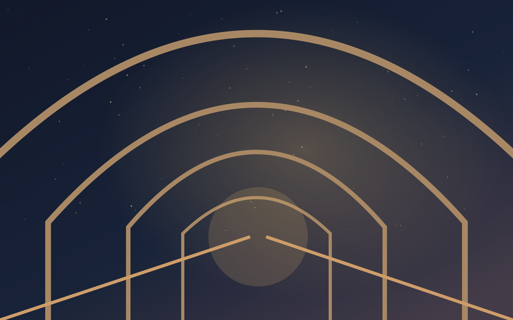

CHAPITRE II - SOUS-SOL · SALLE DES ÉCHOS
La chambre des échos

Dans cette salle circulaire, des messages tournent comme des lucioles. Tu entends des habitants demander une minute de plus, puis une journée, puis une semaine. Les voix finissent par se confondre. Au centre, une horloge bat sans aiguilles. Une porte de service conduit vers un phare dressé au bord de la ville.
Rendre du temps pourrait libérer les voix. Mais les laisser partir pourrait arrêter la machine.